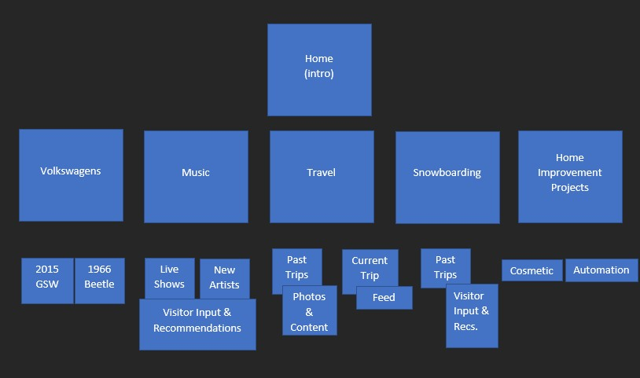
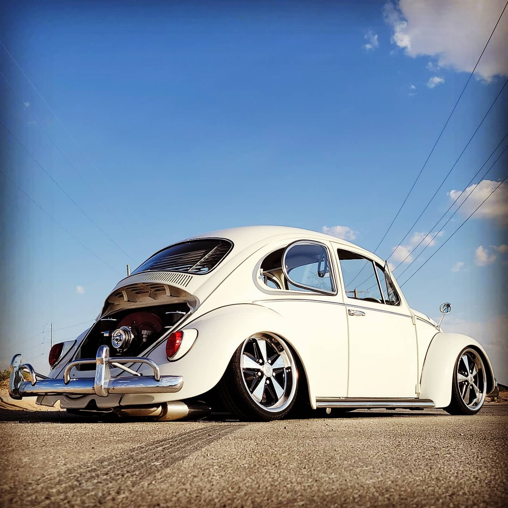

Hey… I’m Brady. I was born and raised in and around Portland Oregon. I love the Pacific Northwest. Growing up I was into sports, music and anything that kept me outside of the house. That changed when I was 14 and spent my entire life savings on a sweet Packard Bell personal computer. I can still remember the specs on that sweet machine… It opened a new world of interests. I began to become obsessed with new gadgets and technologies. I graduated high school with the intent of going to college and pursuing an electronic engineering degree. Well, life happens and that didn’t come to fruition. At the age of 22 I decided to join the United States Air Force and see where it took me. Seventeen years later I realize it took me everywhere. I’ve moved 11 entire house moves in the past 17 years. I’m currently living in El Paso, Texas and would like to retire out of here if the workload doesn’t continue to get out of hand. I’m not sure what I’d like to do after I retire, but for now I’ll continue to travel, nerd out and work on my Volkswagens.
I'm a huge VW nerd. Dating all the way back to the air-cooled internal combustion engine Beetles through the most modern electric offerings found on dealership lots. It all started when I was very young, and my mother had a 1972 Standard Beetle. It was my first experience with a VW. When I was 15, I learned to drive in a 1978 Super Beetle Convertible she had bought. I thought it was the coolest car. That Christmas my parents bought me my own 1973 Super Beetle for $1000. I went through every part of that car repairing and refurbishing it and making it my own. It was a great first car because it forced me to learn about basic mechanics which is a skill I’ve developed and carried with me through the rest of my life. I’ve only owned VW’s my entire life except for a couple Audis which is owned by VW itself. I currently own a heavily modified 2015 Golf Sportwagen TDI and a 1966 Beetle and find myself in the garage every weekend doing something.
Directly below you'll find a layout of how I want this site to be organized. I want to focus my site on my hobbies. I've outlined my 5 biggest hobbies and tried to determine content and visitor interaction that may be interesting. I think my next step is to create the 5 sites aligned with each hobbie then break it down further. Digging to far into a website for the information you're looking for can be annoying so I don't want anything to be deeper than the 3rd layer of information. I'll then create some links on the HOME/INDEX page. I think with my hopes of having visitors prpvide recommendations or suggesgtions I will need to master that aspect of programming. I need to record the inputs for me to ingest and possibly respond to.
Frequented Websites -
TheSamba - Forums and ClassifiedsSweet Photos -
